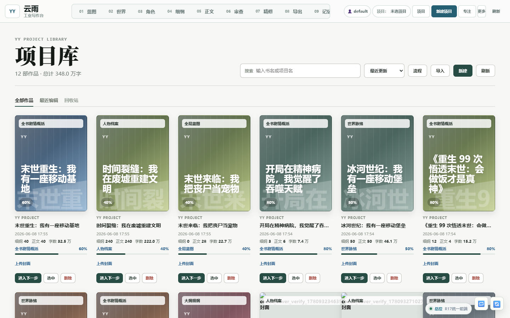
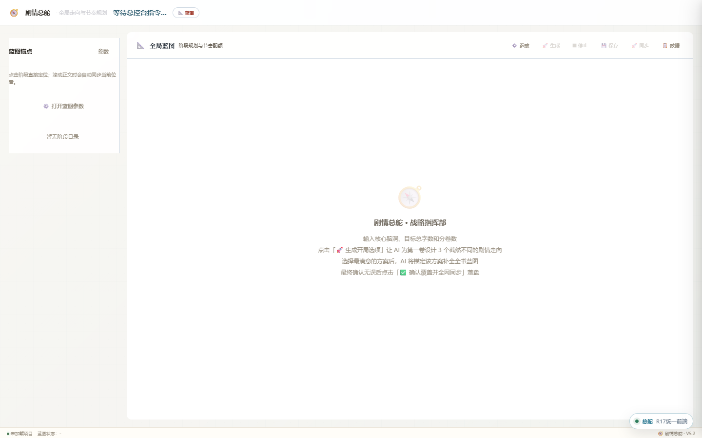
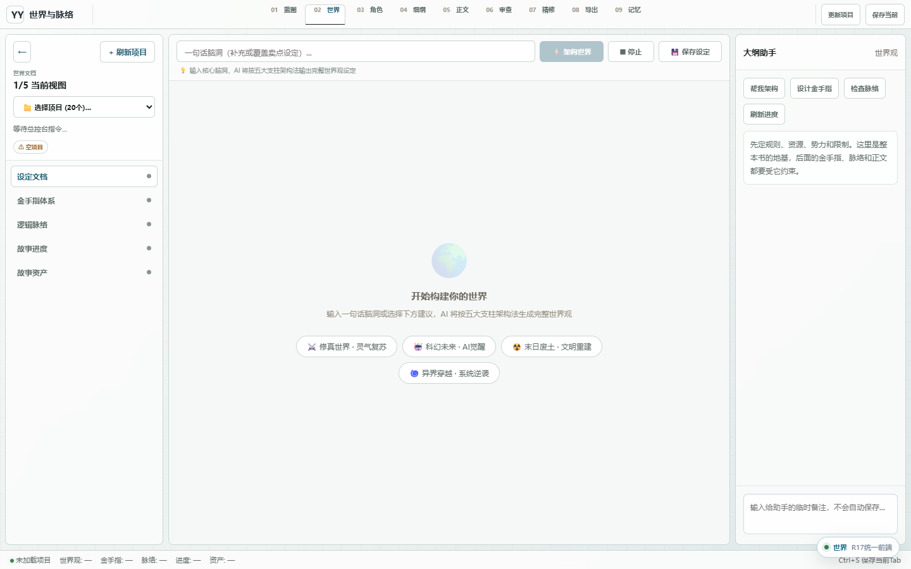
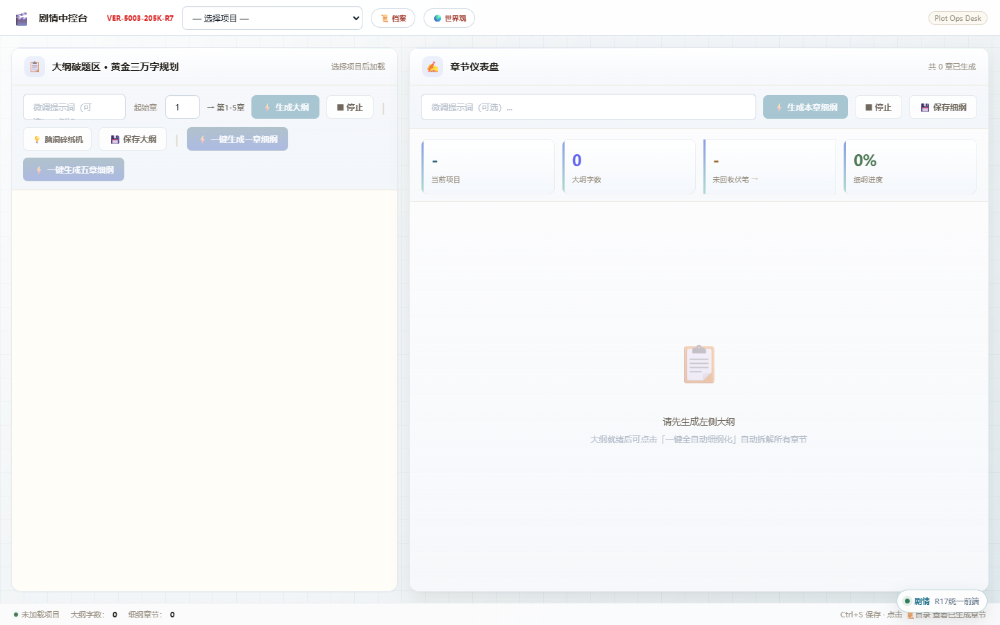
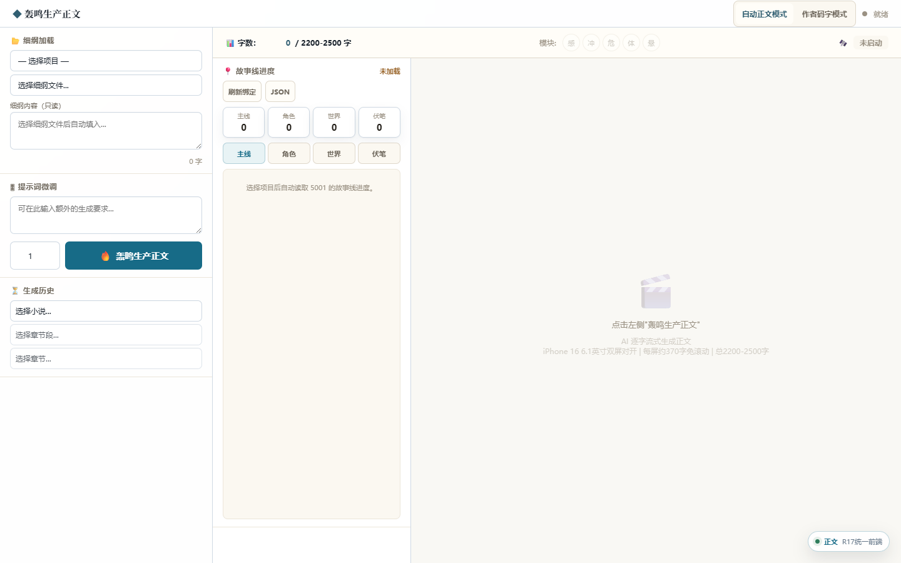
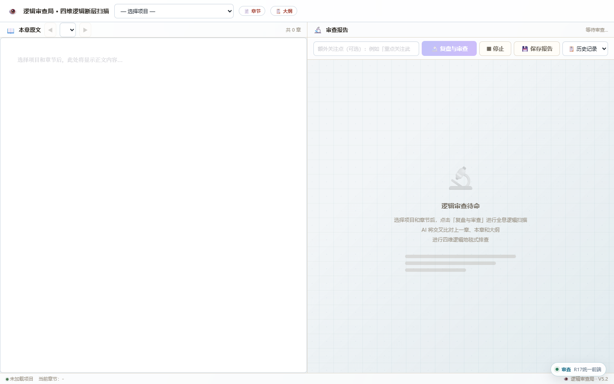

把“写一部长篇”拆成题材、蓝图、人物、世界观、细纲、正文、审查和精修等可观察节点。
How to read this page
这页不是产品展示，而是一次工作流判断复盘
我希望读者主要看三件事：我如何拆解一个长链路 AI 生成任务；如何判断哪些环节适合 AI、哪些必须保留人的决策； 以及如果继续产品化，它为什么更适合延展成 AI 短剧脚本生成平台。
让 AI 负责生成、整理和审查建议，把方向选择、事实取舍和最终接受权留给人。
从一次原型实验里，看见上下文资产、版本管理、审查反馈和返工路径这些真实产品问题。
Starting Point
我想弄清楚的问题：生成能力变强后，产品价值往哪里移动
如果 AI 已经能快速写出一段正文，困难不会消失，只是转移到了更上游和更长期的地方：人物和世界观能不能稳定，章节之间能不能连续，返工时会不会牵一发动全身，创作者能不能看清自己在控制什么。
先看链路，不急着做功能
我先把长篇写作拆成多个阶段，观察每个阶段需要什么输入、会产出什么材料、下游会依赖哪些结论。
把上下文当成核心资产
人物档案、世界观规则、全局蓝图、章节细纲和审查报告，不只是 prompt 材料，而是后续生产持续依赖的项目资产。
给返工留入口
题材、蓝图、人物或世界观变化后，下游内容应该能被重新检查和重建，而不是每次都从头聊天。
Workflow
我把流程拆成了 10 个阶段
这个拆法不一定是最终答案，但它帮助我把“AI 写作”从一个聊天框问题，拆成一组可以观察、验证和调整的工作节点。
01
项目创建
作品名称、目标字数、用户隔离、模型配置
02
题材配置
世界观类型、爽点机制、主角模板、情绪曲线
03
全局蓝图
全书阶段、核心冲突、关键转折、节奏锚点
04
人物底座
角色关系、动机、阵营、生死状态和人物事实
05
世界观脉络
规则、势力、资源、伏笔、长期上下文
06
大纲与细纲
主线大纲、章节目标、情节点、承接关系
07
正文生成
基于细纲与上下文生成章节草稿
08
逻辑审查
检查连续性、人物一致性、节奏和伏笔回收
09
精修处理
优化表达、节奏、清晰度和局部段落手感
10
预览导出
合并章节，输出可继续编辑或发布的稿件
Method
我的方法：先定义中间产物，再讨论 AI 能做什么
这次实验里，我没有把重点放在“某个模型能不能一次写好”，而是把注意力放在更稳定的问题上：流程里有哪些中间产物，哪些产物需要版本感，哪些判断应该由人确认，哪些步骤失败后可以回滚。
把创作任务拆成可命名节点
先区分题材、蓝图、人物、世界观、细纲、正文、审查和精修，不让一个大 prompt 同时承担所有职责。
让每个节点有输入输出
每个阶段都尽量留下可读的文件或状态，例如人物档案、世界观规则、章节细纲、审查报告，方便人检查。
明确人机边界
AI 可以生成、整理和提出审查意见，但题材方向、蓝图取舍、人物事实和最终稿件是否接受，仍应该由人决定。
把返工设计进流程
当上游设定变化时，下游细纲、正文和审查需要重新校验。这个问题比单次生成效果更接近真实使用。
Evidence
运行截图
截图只保留能说明流程和系统结构的部分，没有展示 API Key、账号密码或私有正文。点击图片可以查看大图。
{kind=link}

{kind=link}

{kind=link}

{kind=link}

{kind=link}

{kind=link}

System Shape
模块拆分是为了看清职责边界
这个原型采用本地多服务结构，不是为了证明架构复杂，而是为了把不同阶段的职责拆开。拆开以后，哪里需要上下文、哪里需要人工确认、哪里容易出错，会更容易暴露。
5107总控台
项目选择、服务状态、统一代理
5109剧情总舵
全局蓝图与全书战略
5100人物/细纲
人物档案与基础材料
5101世界与脉络
世界观、规则、伏笔和长期上下文
5103剧情中控
大纲和逐章细纲
5106正文引擎
章节正文生成和历史记录
5104逻辑审查
连续性、人物、节奏和设定校验
5105精修服务
表达、节奏和段落优化
5108导出管理
预览、合并和导出
Reflection
这个原型现在还不成熟
我不想把它包装成一个已经完成的产品。它更像是一次把问题摊开的练习：通过做一个能跑的原型，逼自己面对流程、上下文、返工、质量和界面组织这些具体问题。
如果继续做下去，我会优先补齐评价体系、版本管理和更清晰的创作者操作路径，而不是继续堆更多生成按钮。
Interface界面仍然偏工程化，创作者第一次使用时需要更明确的路径提示。
Structure早期文件和服务命名比较混乱，后续需要继续收敛目录和边界。
Evaluation目前更多是流程可跑通，还缺少系统化的内容质量评价指标。
Next下一步应围绕版本、审查结果、人工确认和返工路径继续产品化。
Possibility
如果继续延展，我觉得它更适合走向 AI 短剧脚本生成
长篇小说和短剧脚本表面上是两种内容形态，但底层都依赖稳定的人物、世界观、冲突关系和节奏控制。这个原型里已经拆出来的人物档案、世界观、全局蓝图、章节细纲和审查机制，可以进一步转化为短剧脚本平台里的 IP 资产底座。
真正需要重做的不是“再接一个生成按钮”，而是把长篇章节逻辑改造成短剧需要的分集节拍、场景冲突、反转点、对白密度和镜头化表达。
IP Bible把人物、世界观、关系网和核心矛盾整理成可复用的短剧设定 bible。
Episode Beats将长篇蓝图拆成每集强钩子、冲突推进、反转和结尾悬念。
Scene Script从章节细纲转为场景脚本，输出人物对白、动作提示和场景目标。
Review Loop继续保留审查与返工，用来检查人物一致性、节奏拖沓和前后设定冲突。
Product Takeaway
我从这个项目里得到的判断
AI 产品的关键不只是模型能力，而是如何组织上下文、定义中间产物、控制生成边界，并把人的判断嵌入流程。 如果继续产品化，我会优先把它发展成 AI 短剧脚本生成平台：从 IP Bible、分集节拍、场景脚本到审查反馈，形成一条可协作、可回溯、可迭代的内容生产链路。